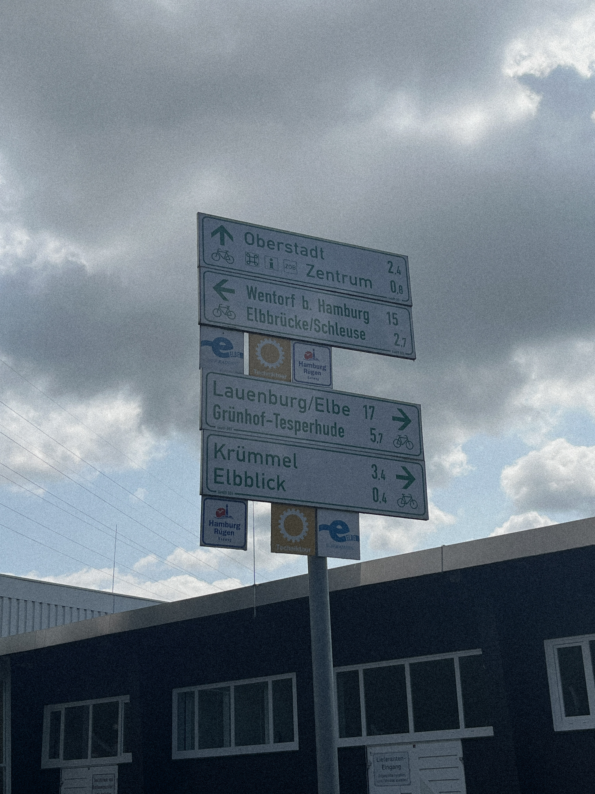
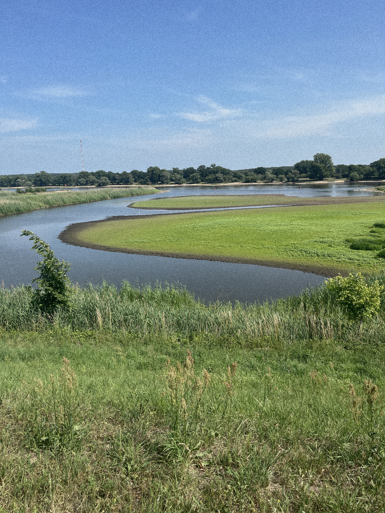
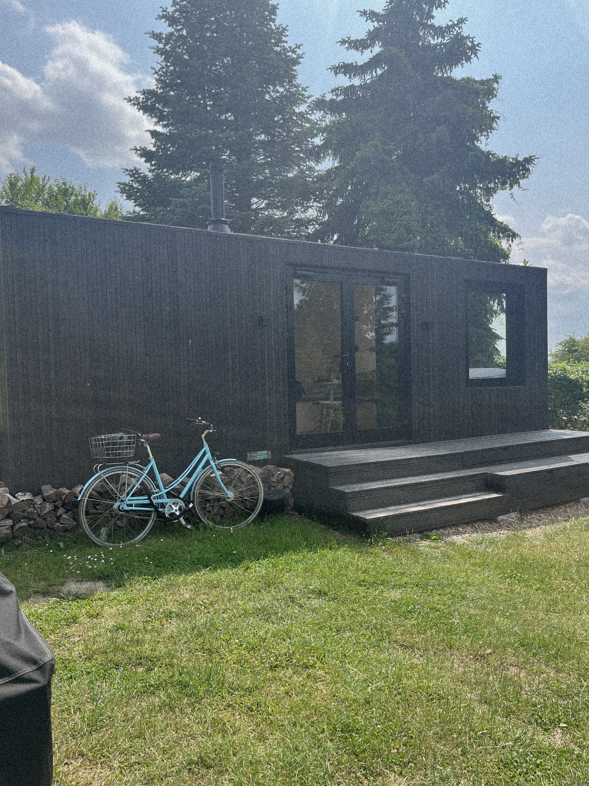
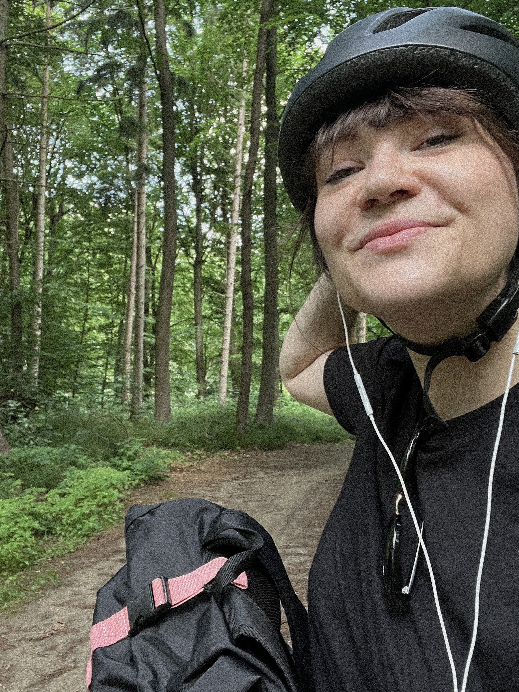
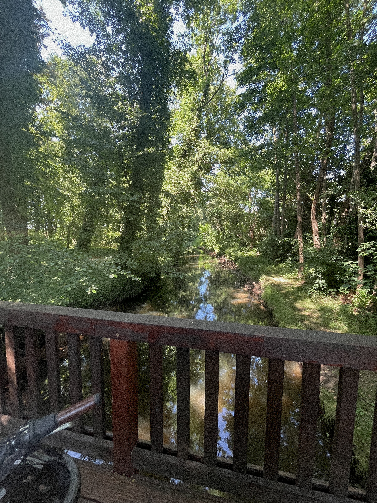
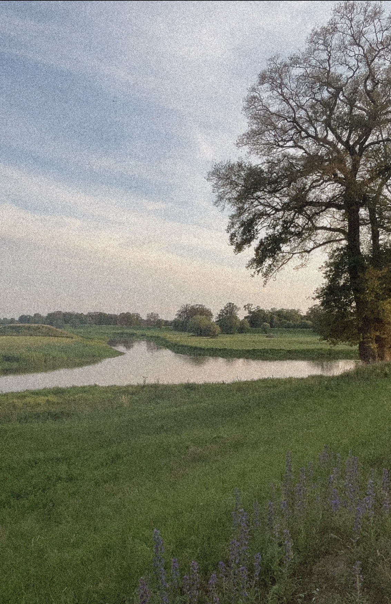
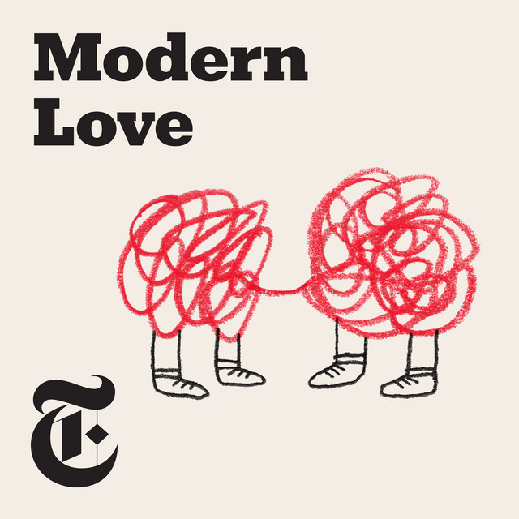
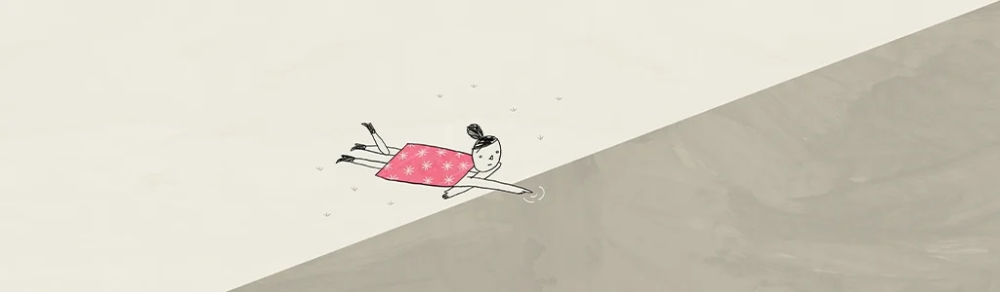

Memoir
PARIS 17
It’s crazy how, at 22, I watched Sex and the City and dreamed of having their life, thinking it would never happen for me. But they weren’t 22 — not even in season one. And now, 10 years later, as I find myself in Carrie’s luxurious age of 32 from season one, I’ve realized it’s even better than I imagined. Worth the wait. We have this ridiculously cool and carefree life. We have good friends, long nights, expensive soaps, sweaty backs from sex and workouts and dancing. We have a fueled car for weekend getaways and a wine cooler for picnics in the park. We have chosen our family. We have yet to discover our favourite restaurant. We can handle technology and worship the classics. We can travel the world and cuddle at home. We can have too much wine, but never too much pasta. We can laugh our asses off, and we will be good at crying when the time comes.
Für Mama (Deutsch)
Es ist verrückt: Mit 22 habe ich Sex and the City geschaut und davon geträumt, so ein Leben zu führen – und dachte, es würde für mich nie passieren. Aber sie waren damals gar nicht 22 – nicht einmal in der ersten Staffel. Und jetzt, 10 Jahre später, im „luxuriösen Carrie-Alter“ von 32 aus Staffel eins, merke ich: Es ist sogar noch besser, als ich es mir ausgemalt habe. Das Warten hat sich gelohnt. Wir führen dieses lächerlich coole, unbeschwerte Leben. Wir haben gute Freunde, lange Nächte, teure Seifen, verschwitzte Rücken vom Sex, vom Sport und vom Tanzen. Wir haben ein vollgetanktes Auto für Wochenendausflüge und einen Weinkühler für Picknicks im Park. Wir haben unsere Familie selbst gewählt. Unser Lieblingsrestaurant müssen wir noch finden. Wir können mit Technik umgehen und die Klassiker verehren. Wir können um die Welt reisen und zu Hause kuscheln. Wir können zu viel Wein trinken, aber niemals zu viel Pasta essen. Wir können uns kaputtlachen – und wir werden gut im Weinen sein, wenn es so weit ist.
(RAD-) WEGE
Montag sattelte ich die Fahrradtaschen und schwang mich ins Ungewisse. Das Ziel: ein klarer Kopf. Vergessen. Versuchen zu vergessen, was mich in den letzten Monaten wahnsinnig gemacht hatte – eine Chefin, die mehr als Vorgesetzte nicht war, und ein Ego, so platt wie der Horizont. Vorwärts war der Weg raus.
Es war bewölkt, aber T-Shirt-Wetter. In Lauenburg war der Elberadweg kaputt, es war beschwerlich – ich hab kein Mountainbike dabei, aber brauchen könnte ich es, dachte ich. Hinterm Deich in Niedersachsen ist es schön, die Bauernhöfe ausladend, die Mähroboter fleißig, die Kühe hungrig, ich auch. Die selbstgemachten Waffeln schmecken fantastisch – mit Aussicht auf die Elbe und ein paar ältere Menschen, die neben mir auf der Bank sitzen.
Die Hotels und Unterkünfte wollte ich immer erst kurz vorher finden – leichter gesagt als getan. Am Ende bin ich 85 Kilometer gefahren. Das Hotel in Hitzacker war ungemütlich, dafür echt teuer und ein bisschen gruselig.
„Ich möchte am liebsten gar nicht auflegen“, sage ich zu Sebastian am Hörer, als es dunkel wird. Die Beine schwer, hoffentlich kein Muskelkater an Tag eins.
Schwarze Johannisbeermarmelade versüßt mir das Frühstück am nächsten Tag. Es tritt sich leicht in die Pedale. Auf dem Deich fahre ich einfach so vor mich hin, in der brennenden Sonne. Mein Pflaster auf dem rechten Oberarm soll mein Sonnen-Tattoo der nächsten Wochen werden.
Es ist ruhig auf dem Weg, nur die zirpenden Grillen begleiten mich – und zwei Männer auf E-Bikes, die meinen kleinen blauen Blitz belächeln. Ich trete fröhlich weiter. Was wissen die schon.
Am Wochenende hatte ich Podcasts geladen, viele Alben gespeichert für unterwegs, weil ja nichts zu tun ist außer in die Landschaft zu schauen – das ist ja langweilig. Dachte ich. Aber schon am zweiten Tag brauche ich das nicht mehr. Keine Kopfhörer, kein Rauschen, keine Ablenkung. Es ist gut, mit den Gedanken allein zu sein. Dann kommen und gehen sie, und ich merke: So wie sie kommen und wehtun, so gehen sie auch wieder – und tun dann gar nicht mehr weh. Und sie kommen immer weniger, immer leiser, vor allem die bösen, die fiesen Worte.
Die Frage, ob ich gefeuert wurde, weil ich es wollte und brauchte – oder weil die Welt einfach manchmal so ist, wie sie ist.
Das zweite Hotel ist toll, eine alte Fischerkate. Ich bin schon fast in Brandenburg. Der Sonnenuntergang am Abend entschädigt so manche schlimme Stunde der letzten Monate. Ich klingele durch bei Mama – sie ist besorgt, weil ich so ganz allein unterwegs bin. Aber einsam bin ich nicht. One’s company.
Für Tag drei war das Ziel klar: die Cabin. Nicht weit vom Weg, mitten in Brandenburg, am See. Ein sicheres Plätzchen, ganz ungeplant, aber ein bisschen mehr Entspannung. Mal einen Tag nicht fahren, aber trotzdem draußen sein.
Ich fahre durch die Allee des Jahres 2020 dahin, sie ist wirklich schön. Kurz lenke ich mich selbst mit etwas Hoffnung ab, dass Heutzutage so viel Stillstand auch noch ausgezeichnet wird. Unterwegs in Büsche zu pinkeln ist das größte Abenteuer von allen. Was die Ameisen alles erzählen könnten.
Für die Cabin halte ich am Supermarkt – Dorf-Netto, wie bei Oma früher. Das Halogenlicht flackert über der Kühltruhe, kalt und grell. Der reduzierte Wein steht neben dem Pesto und ein Aloe-Vera-Gel als After-Sun mit Tabaluga drauf. Nicht alles, was cool ist, darf nur für Kinder sein. Mein Sonnenbrand freut sich sicherlich.
Die Cabin ist hübsch eingerichtet, gemütlich und einsam. Es sind wenige andere Gäste in Sicht. Jemand loggt sich drei Mal in meine Bluetooth-Box ein. Ich lasse es laufen: gemütlicher Blues. Da hat jemand Geschmack – und vielleicht Liebeskummer.
Den Abend verbringe ich vor dem kleinen Tablet und meiner Geschichte. Ria und Nick tanzen jeden Tag durch meinen Kopf und abends auf den Seiten. Sie erleben Dinge, die ich auch erlebt habe – aber nur einen Teil davon. Den anderen erlebe ich in dem Moment, in dem er mir einfällt, wenn das Herz schwer ist oder brennt. Die ausgedachten Gefühle gehen so oft durch mich hindurch, dass sie sich fast wie eine Erinnerung anfühlen.
Es ist so heiß über den Tag, dass ich im See baden gehe, in Unterwäsche – aber außer ein paar Kindern ist keiner im Wasser, und es stört ja keinen. Abends höre ich Kichern aus Richtung der Sauna. Da gehe ich am nächsten Tag hin. Der Sonnenuntergang mit ein paar Karottensticks und Wein auf der Veranda ist Ausreinigung genug. Alle Poren frei von allem.
Ich brauche dreißig Minuten zum Kaffeeaufkippen am nächsten Morgen. Die Gedanken unterbrechen mich ständig. Oder der Blick nach draußen. So soll das doch auch sein. Eigentlich könnte ich immer so lange brauchen.
Der Roman ist fast fertig – das weiß ich am Donnerstag meiner Radwoche noch nicht, aber Donnerstag drauf ist es fast so weit. Ich erinnere mich an das Kapitel, das ich mit Blick auf die große Tanne und den Wald dahinter geschrieben habe. Das war die finale Idee. Der letzte Schliff. Die Geschichte ist nicht rund – aber warum sollte sie das auch sein. Das Leben hat ja auch Ecken und Kanten ohne Ende.
In der Sauna sitze ich allein. Ich lasse sie bei 80 Grad – draußen ist ja eigentlich Sommer. Zum Abendessen gibt’s eine Stulle und Come Away With Me von Norah Jones. Das gehört eigentlich zur Badewanne, aber an diesem Abend passt es so schön zur lauen Sommerluft und dem vielen Platz, der sich in meiner Brust geschaffen hat.
Ich denke an den nächsten Tag, die letzte Etappe, und will, dass es weitergeht – aber auch, dass der Abend nie endet. Ich könnte für immer so sein. Vielleicht klappt es mit diesem Buch ja, dass ich mehr Zeit dafür habe und weniger für blöde Chefs.
Am Freitag treffe ich noch jemanden am Tor, auch zwei Tage da gewesen. „Wie Kurzurlaub“, sagt sie. Wir unterhalten uns nett, ich teile Sonnencreme, dann geht es auf zur letzten Strecke – so weit es geht bis Magdeburg. Nur über die Elbe sollte da eine Brücke sein, die es nicht gibt. Ich bin nicht die Einzige, die nicht mit einem Fahrrad auf dem Rücken schwimmen kann.
Aber mein Taxi ist zum Glück flexibel. Sebastian holt mich nach 65 Kilometern ab, an einem kleinen Kneipp-Pfad mitten im Wald. Dafür ist die moderne Technik schon ganz gut geeignet – dass ich mitten im Nichts gefunden werde, eingesammelt.
Den Rest bis Leipzig geht es mit dem Auto. Aber ich komme wieder. Vielleicht von Anfang an mit einem leichteren Herzen beim nächsten Mal. Hoffentlich.
MODERN LOVE
Die erste Liebe fühlte sich an wie das Meer: weit, tief, stürmisch, unberechenbar – und manchmal auch gefährlich. An Ocean Away ist meine Geschichte darüber: vom Treiben zwischen Nähe und Distanz, von Erinnerungen, die bleiben, und von Momenten, die uns ein Leben lang unter die Haut gehen. Ursprünglich habe ich diesen Text im Juni 2022 für die MODERN LOVE-Kolumne der New York Times geschrieben. Veröffentlicht wurde er dort nie – aber der Versuch war es wert. Deshalb teile ich ihn jetzt hier: zuerst im Original, und dann auch noch einmal auf Deutsch (für Mutti).
An Ocean Away
He just sent me a friend request on Instagram. Some things really don’t change.
Fourteen-year-old me would’ve been amazed at how easy it is now to stalk someone. Back then, all we had were local student platforms and the occasional school trip photo—which I’d zoom in on endlessly, trying to make out his blond curls in three blurry pixels. He was my summer crush. He played the drums at music school. I took piano lessons. Once, in a moment of wild courage, I asked him out for ice cream. He politely declined and I cried for weeks. But even waves of tears couldn’t wash away the butterflies completely. He lingered somewhere.
When Facebook arrived, he had a girlfriend—someone younger, blonder, plastered all over his profile in selfies and status updates. We did not have the same friend group, so you get my surprise when he sent me a friend request, followed by a message asking me out. I assumed he’d had broken up with the blonde. I told myself he must be slow at deleting his digital traces but mostly I was excited that he remembered me, remembered that I’d liked him all those years ago. I said yes. Then spent the rest of the day deep in his photo albums.
But the photos didn’t prepare me for him in real life. Even taller, a little lanky. Sandy curls cut short and spiked with wax. Brown eyes that still made something shift inside me. He was cheeky and took me out for ice cream.
The date was dizzying—not just from sugar and adrenaline, but because he was funny, magnetic, like I’d imagined back then. After we hugged goodbye, I kept feeling the ghost of his skin on mine, as if my body was trying to memorize him. I fell for him again like a tide pulling me under.
And then, a few days later, he told me he hadn’t broken up with his girlfriend after all. He said he wanted something casual. A secret. He liked me. He kissed me. And I drowned in him, knowing exactly what I was doing.
I hadn’t dated much until then. The sex was unexpectedly easy, a thrill of backseats and hidden nights. I told myself I didn’t care about the sneaking around, not if it meant being close to him. We’d lie side by side under my skylight, talking for hours about big and small things, carefully circling around the truth. Sometimes, I’d think about her—the other girl—and wonder how he touched her. Whether he made her laugh. Whether she knew what I knew. If he ever said her name when he collapsed onto her, panting. At first, we met once a week. Then he stayed over more often. We shared mixtapes, late nights and ideas for our future selves, but our relationship stayed invisible. I couldn’t tell my friends. I couldn’t post photos. I couldn’t call him mine.
And then, when the girlfriend found out, he disappeared.
I should’ve known it would happen eventually— and that it would hurt. But I wasn’t prepared for the wave of pain that followed. When I finally made it out of the storm, months later, that could’ve been the end. It should have been. I tried dating other people. Tried not to look for him in their faces. And just as I managed— he came back.
I was there for it, but different. Jaded. Maybe a little spiteful. I didn’t want him to be my whole focus anymore. I kept seeing other people, but in each of them, I searched for some version of him. No one measured up. He had become the standard. The addiction.
When we left for university, we were only an hour apart. We didn’t have to hide anymore—but still barely went out. We saw each other more often and days blurred together: sex, music, endless conversations. One evening, he showed up at my door just as I was heading out with friends. He looked wrecked. Said they’d broken up for good. For the first time, he was really single. We went out together. He joined me at a party, held my hand, kissed me in front of everyone. People asked if he was my boyfriend. It felt like something had finally shifted.
Drunk on it all, I told him I loved him. He smiled and said, ‘Then let’s get married.’ We made a ring out of a hair tie. I still had it on the next morning. But he was gone. We never spoke of it again.
For years, we had this unspoken ritual—seeing each other at Christmas. A pint. A backseat. Familiar, intimate, unsustainable. Then one year, he cancelled. He had a new girlfriend. I’d just been cheated on myself. It stung. Not just because he wasn’t mine anymore, but because somewhere deep down, I felt like I deserved it. I had spent so long being the other girl. I wanted to be angry, to blame him for making it hard to love anyone else. But when he came back again, months later, all I felt was that old warmth. His eyes. His breath. The sense of home. Forgiveness came easily.
Details faded over time. Except one: morning light, coffee and buttered toast hanging in the air, and the quiet news that his new girlfriend was pregnant. That was the last time. Really, the last time. He stopped visiting. I stopped hoping. And slowly, the tide turned.
I began to understand that what I mistook for love was his need for safety. That he used people—used me—to stay afloat. While I was collecting moments, building a version of love around him, I was only ever something temporary. I was his lifebelt. Never the shore.
We’re connected on linkedin now, but that’s all the digital traces there are. I saw him again recently, on a visit home. I was in a drugstore with my mum when she spotted him first. Then I saw him—standing with his wife and children. She had my haircut. My glasses. It felt like looking at some alternate version of myself. He didn’t say hello.
I’ve always belonged to water. I go where currents carry me. I let waves hold me through fear, heartbreak, longing. I love the ocean for its vastness, even though it terrifies me. But somewhere along the way, I learned that even in the deepest tide, I can find the surface again.
Einen Ozean Entfernt
Er hat mir gerade eine Freundschaftsanfrage auf Instagram geschickt. Manche Dinge ändern sich wirklich nie. Mit vierzehn hätte ich mir nicht vorstellen können, wie leicht man heute jemanden aus der Ferne verfolgen kann. Damals gab es nur Schülerplattformen, auf denen wir hin und wieder Fotos von Klassenfahrten hochluden – in die ich hineinzoomte, stundenlang, fasziniert von seinen blonden Locken in drei Pixeln. Er war mein Sommerschwarm, spielte Schlagzeug an meiner Musikschule, ich nahm Klavierunterricht. Einmal, im Flur, fragte ich ihn zögernd, ob er mit mir ein Eis essen wollte. Er lehnte höflich ab, und ich weinte wochenlang. Doch selbst Wellen von Tränen spülten die Erinnerung an dieses erste Kribbeln nicht fort. Als Facebook kam, war er mit einem Mädchen zusammen, jünger als ich. Ihr Gesicht überall auf seinem Profil, Selfies ohne Ende. Umso verwirrter war ich, als ich plötzlich eine Anfrage von ihm bekam – mit einer Nachricht, ob wir uns treffen wollten. Ich nahm an, sie hätten sich getrennt und er sei nicht der Typ, der sofort alle Spuren löschte. Begeistert davon, dass er sich an mich erinnerte, sagte ich sofort zu und verbrachte den Tag damit, durch seine Fotoalben zu treiben. Doch nichts auf diesen Bildern kam dem jungen Mann gleich, der mich wenige Tage später abholte: größer, schlaksig, die sandfarbenen Locken kurz geschnitten, mit Wachs in die Höhe gestellt, samtbraune Augen, die in mir einen Sturm auslösten. Er war frech – und ludt mich zum Eis essen ein. Das Date drehte mir den Kopf: vom Reden, vom Zucker, vom Adrenalin. Vor allem aber, weil er charmant war, lustig. Seine Stimme rollte über mich wie Wellen im Sonnenlicht. Nach unserer Umarmung zum Abschied konnte ich nicht aufhören zu spüren, wo seine Haut die meine berührt hatte, als müsste ich mir immer wieder beweisen, dass es wirklich war. Ich verliebte mich noch einmal in ihn – so schnell und unausweichlich wie eine Strömung, die mich unter Wasser zog. Doch ein paar Tage später ging ich erneut unter, als er mir gestand, dass sie gar nicht getrennt waren – dass er nur eine Affäre suchte, mich bat, sein Geheimnis zu sein, mir sagte, dass er mich mochte, mich mit Gedanken von richtig und falsch überschwemmte – und mich schließlich mit einem einzigen, simplen Kuss ertränkte. Ich hatte kaum Erfahrung mit Beziehungen. Sex auf dem Rücksitz eines Autos, unter den ersten Malen überhaupt, war unerwartet und aufregend und irgendwie verboten. Doch das war mir egal. Ich wurde egoistisch – solange ich Zeit mit ihm bekam, nahm ich Herumschleichen und unangenehme Situationen in Kauf. Am liebsten waren mir die Nächte, wenn wir stundenlang in meinem Bett lagen, die Sterne durch das Dachfenster betrachteten oder einfach nur uns selbst, redeten über die großen und kleinen Dinge, aber immer um den heißen Brei. Manchmal dachte ich an das andere Mädchen – ob er sie auch zum Lachen brachte, sich ihr Haar um die Finger wickelte und auf ihr zitternd zusammenbrach, sein Herz gegen ihre Brust hämmernd, während er ihren Namen sagte. Zuerst trafen wir uns einmal die Woche. Dann blieb er öfter über Nacht. Wir tauschten Mixtapes, Nächte, geflüsterte Intimität; einmal überstand er sogar einen prüfenden Handschlag meines Vaters. Doch unsere Beziehung war unsichtbar. Ich konnte niemandem davon erzählen, keine Fotos posten, ihn nicht für mich beanspruchen. Und als seine Freundin es herausfand, verschwand er aus meinen Nachrichten. Das hätte das Ende sein können. Ich fing an, andere zu daten, immer heimlich hoffend, dass er zurückkäme. Und er kam zurück. Als ich unsere Heimatstadt verließ, lagen unsere Universitäten nur eine Stunde auseinander. Wir mussten uns nicht mehr verstecken. Doch wir gingen trotzdem kaum raus. Die Tage verschwammen: Sex, Musik, nächtelange Gespräche. Dazwischen suchte ich in anderen, was er mir so mühelos gab, aber es war nie dasselbe. Alle blieben die Ebbe nach der Flut, die er für mich war. Eines Abends wartete er auf meiner Türschwelle, als ich gerade los wollte. Er wirkte verloren, sagte, sie hätten sich getrennt, er sei endlich frei. Es war so neu für ihn. Wir beschlossen, auch für uns etwas Neues zu versuchen. Er kam mit auf die Party, und ich genoss es, ihn an meiner Seite zu haben, Leute, die nach meinem „Freund“ fragten, er, der mich vor allen küsste. An diesem Abend, betrunken, benommen von seiner Nähe, sagte ich ihm einfach, dass ich ihn liebte. Ich wusste es, hätte es aber nüchtern nie gewagt. „Dann lass uns heiraten“, antwortete er. Wir machten einen Ring aus einem Haargummi. Ich trug ihn noch am nächsten Morgen, als ich neben dem Geruch von ihm auf seiner Seite des Bettes aufwachte – doch er war verschwunden. Wir sprachen nie wieder darüber. Von Beginn an trafen uns über Weihnachten im Pub unserer Heimatstadt: ein Bier, ein schneller Sex im Auto, ein Ritual der Intimität. Das Jahr nach seinem „Antrag“ sagte er ab – er hatte eine neue Freundin – und es traf mich hart. Nicht nur, weil sie nicht ich war, sondern weil ich selbst gerade betrogen worden war. Ein Teil von mir fühlte, dass ich es verdiente – ich war so lange das „andere“ Mädchen gewesen. Ich wollte ihm die Schuld geben, meinen Zorn auf ihn werfen, dafür, dass er es mir unmöglich machte, jemand anderen zu finden, weil ich immer wieder Männer wählte, die mich behandelten wie er. Weil es das Einzige war, was ich kannte. Wut, Verrat – und doch dieses alte Vertraute, das zurückströmte, in dem Moment, als er Monate später durch meine Tür trat. Seine Augen, sein Atem, das Gefühl von Zuhause. Vergebung. Die Details verschwammen mit der Zeit, bis auf eines. Morgensonne, der Duft von Toast und Kaffee, der wie Nebel über stillem Wasser hing, und die Nachricht, dass er nicht mehr so frei kommen würde – seine neue Freundin war schwanger. Das letzte Mal, dass wir uns wirklich so sahen. Distanz wurde zu einer Strömung, gegen die ich endlich anschwimmen konnte. Da begriff ich, dass ihm seine vielen Beziehungen Sicherheit gaben, die er mit Liebe verwechselte und während ich die Momente sammelte, die ihn zu meinem Hafen machten, war ich für ihn nur ein Rettungsring. Vor kurzem sah ich ihn wieder, bei einem Besuch in unserer Heimatstadt. Ich schlenderte mit meiner Mutter durch die Gänge einer Drogerie, als ich ihn bemerkte– mit Frau und Kindern. Sie hatte den gleichen Haarschnitt und dieselbe runde Brille wie ich – ein Spiegel, den ich nicht erwartet hatte. Keiner sagte Hallo. Ich habe mich immer im Wasser zuhause gefühlt, wo Strömungen mich tragen und Wellen meine Ängste wiegen. Das Meer allein macht mich glücklich. Doch etwas zu lieben, das so weit, gleichgültig, unaufhaltsam ist, ist furchteinflößend. Trost liegt in dem Wissen, dass man selbst in der tiefsten Flut wieder auftaucht. Immer wieder auftaucht.
JUNI 2018 DRAMEN
Das beste Drama spiele ich immer noch vor mir selbst. Filmreif lehne ich mich gegen die Bank und blicke vom Hügel über die Stadt in die beinahe untergegangene Sonne. Die Hitze des Tages bricht, kühlere Luft streift über meine Haut, Gänsehaut wandert über meine Arme. Ich nehme einen Schluck Rotwein. Schritte auf dem Gras hinter mir. Die Musik der Party ist nur noch ein dumpfer Rest, das Zirpen der Grillen im Vordergrund.
„Hier bist du also“, sagt er und setzt sich auf die Lehne der Bank.„Wieso bist du hier? Die Party ist da oben.“
„Hm. Nur kurz allein sein.“
„Darf ich trotzdem?“ Er zündet sich eine Zigarette an. Schwarze Jeans, weiße Sneaker, beige vom Staub. Er lehnt sich neben mich, bläst Rauch aus.
„Das könnten wir sein.“
„Wir?“
„Na, einer von uns könnte der nächste sein, der einen Garten kauft und mit seinen Kindern Frisbee spielt.“
Ich weiß genau, was ich denke, aber ich höre lieber nicht hin.„Ja. Stimmt. Irgendwann.“
Ich fröstele und gebe ihm das Glas, reibe mir die Arme, als würde ich mich selbst umarmen. Wir lächeln uns an.„Willst du meine Jacke?“ Er stellt das Glas auf die Bank und legt er mir seine Jeansjacke über die Schultern. Sie riecht nach ihm, nach Nachtluft, nach all den Abenden, an denen er mir schon eine Jacke gegeben hat. Als wir anders waren. In meinem Bauch wird alles schwer. Ich drehe mich zu ihm um, halte den Stoff fest, als wäre es das Einzige, was von ihm bleibt.
Er sitzt einfach da, schmunzelt. Zwischen uns liegt so viel Zeit, verstreut wie Pusteblumen-Samen im Wind. Seine Hand fährt durch meine Haare, zieht mein Gesicht näher. Einen Moment lang verharrt er so, als würde er warten, dass ich ihn wegstoße, aber ich bewege mich nicht.
OKTOBER 2018 PATZER
We first saw each other a couple of weeks ago. He smiled and said hi, and something immediately stirred inside me. I hadn’t thought about another guy for what felt like ages. He has such a soft voice, deep and gentle. He makes mistakes when he talks — grammar slips, sometimes he doesn’t find the right words. It’s sweet. He impresses me; he’s clever. He doesn’t give a damn what people think, unlike me, who worries endlessly about what people might think of her. Whether they like me. Nowadays, whether he likes me... We were drunk out partying the first time I noticed that he saw me too. A friend from work took me shopping; we bought dresses. I picked mine with him in mind. We exchanged a few texts — “Meet us there,” a couple more friends. Hopeful and slightly tipsy, he was there too — at least not sober, who knows. We went for a round at the bar, some wine, some beers. We toasted; his gaze shot into my eyes. I felt warmth crawling up my neck. I wanted something to happen. I never know what I expect to happen, just that I want to be the only one. To feel wanted. We danced, talked to other people, to our friends, to each other. And I don’t remember the circumstances, but all of a sudden, he stood in front of me. Grabbed my hand, pulled me a little closer, and started to move, as if we were just friends, giggly and dancing. I was way too confused and by that point way too drunk as well. We stood there, moving for a few minutes (or more?), and I tried to get even closer, his shoulders touching my nose. No particular smell, just the club, the smoke and something thrilling. The closest we got was when he pulled my hair and curled it between his fingers for a second. It went so quickly I couldn’t even comprehend it. And off he was again, pointing with the same fingers towards the bar. I nodded and we moved away from the group, heading to the bar. I was in front; he grabbed my neck gently and pushed me, with an unfamiliar softness. I liked it. I wanted to turn around and kiss him; he probably wouldn’t have let me anyway, but I shied away. I let him order me some more wine. We toasted; I looked into those deep, gloomy eyes, my stomach turned. It was just the wine, and of course my urge to feel wanted. To feel loved. It hurts, never to be satisfied. Like that night, when we parted, just a quick hug, buzzing in my stomach, I had to go home.
Sag mir, was meinst du?









